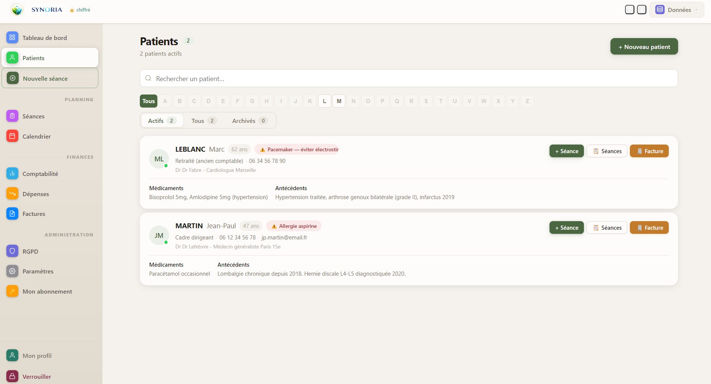
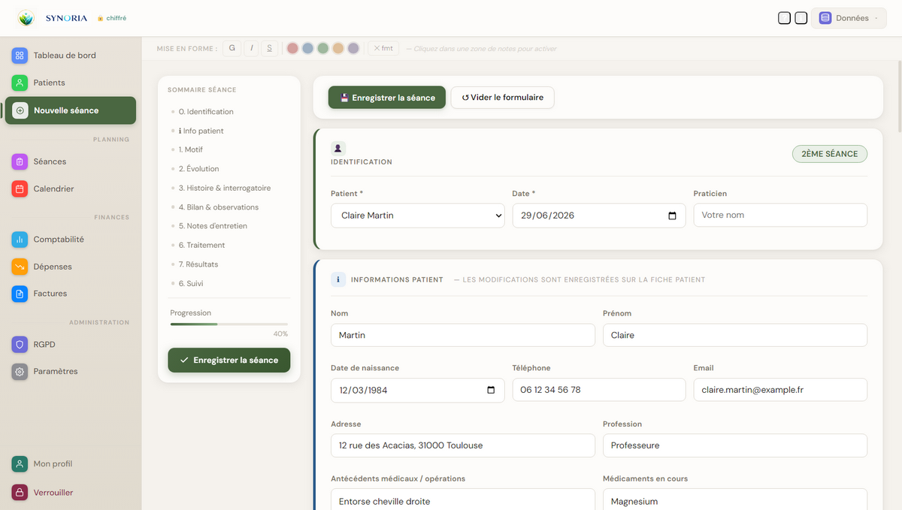
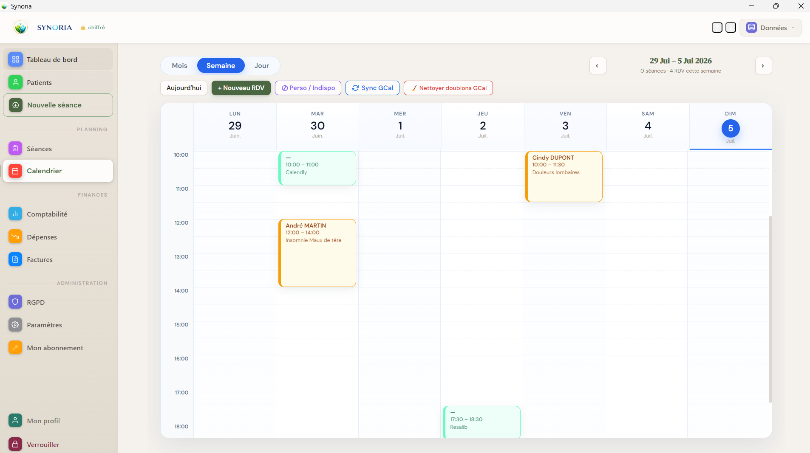
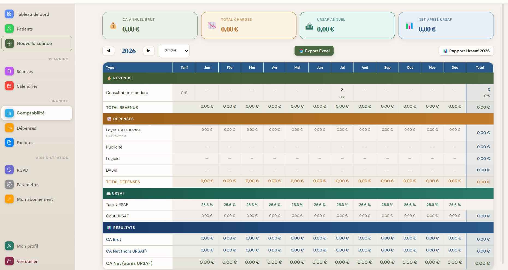

Patients
Coordonnées, antécédents, alertes, consentement RGPD, notes et historique complet des séances.
Synoria centralise fiches patients, séances, planning, facturation et comptabilité dans un logiciel de bureau. Vos données restent sur votre poste, chiffrées et maîtrisées.

Synoria évite de disperser les informations entre un agenda, des notes, un tableur et des modèles de facture.
Coordonnées, antécédents, alertes, consentement RGPD, notes et historique complet des séances.
Formulaires simples ou spécialisés, texte enrichi, édition, duplication et exports Excel et PDF.
Rendez-vous, prochains suivis, rappels et synchronisation Google Calendar.
Factures numérotées, statut payé, dépenses, recettes mensuelles et export comptable.
La liste patients met en avant les informations utiles : identité, contact, alertes, consentement et accès rapide à l'historique.
Synoria fonctionne en formulaire généraliste ou via des plugins métier : MTC, ostéopathie, kinésiologie, naturopathie et formulaires personnalisés.


Rendez-vous, consultations réalisées et factures sont reliés au dossier patient pour garder une vision cohérente de l'activité.

Synoria est conçu pour une utilisation locale : mot de passe, chiffrement de la base, verrouillage automatique, sauvegardes chiffrées et registre RGPD intégré.
Aucun cloud obligatoire. Les données ne quittent jamais le poste du praticien.
Base de données protégée par AES-256-GCM et dérivation PBKDF2 du mot de passe.
Consentements patients, journal d'accès et registre de traitement Article 30.
Exports chiffrés, vérification d'intégrité et restauration des données.
Disponible pour Windows 10/11. Un abonnement Synoria actif est requis pour utiliser le logiciel.